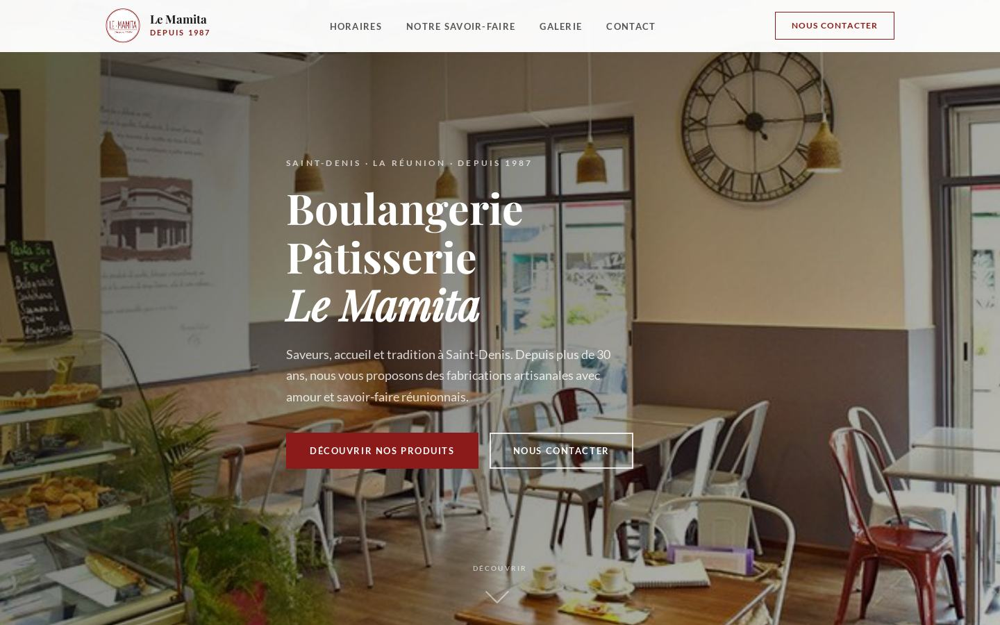
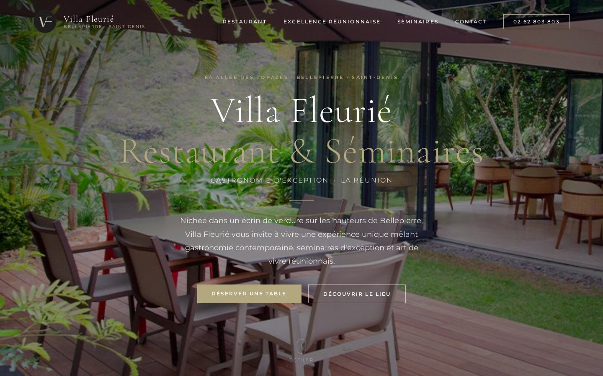
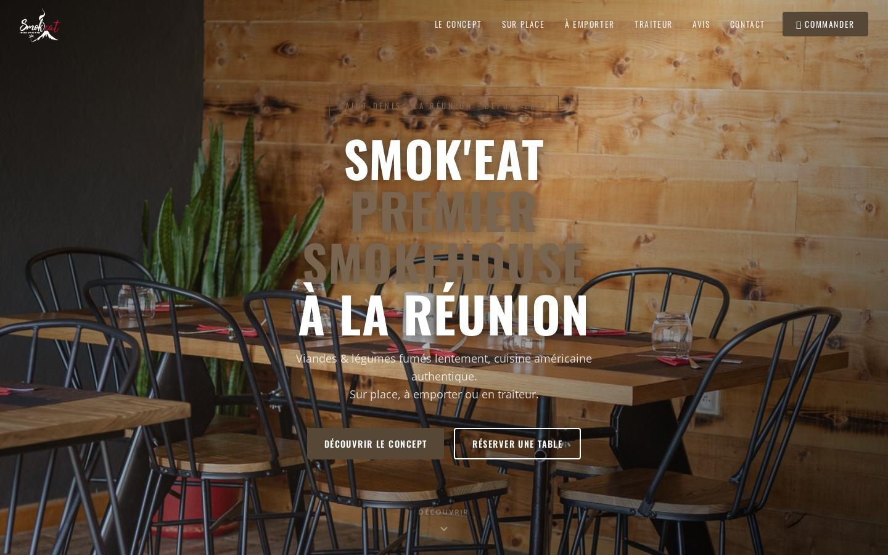
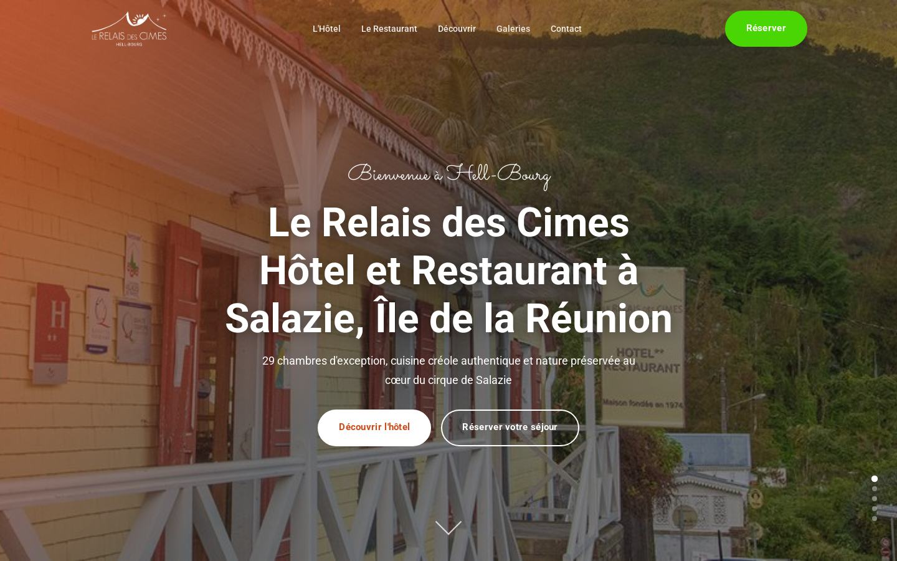
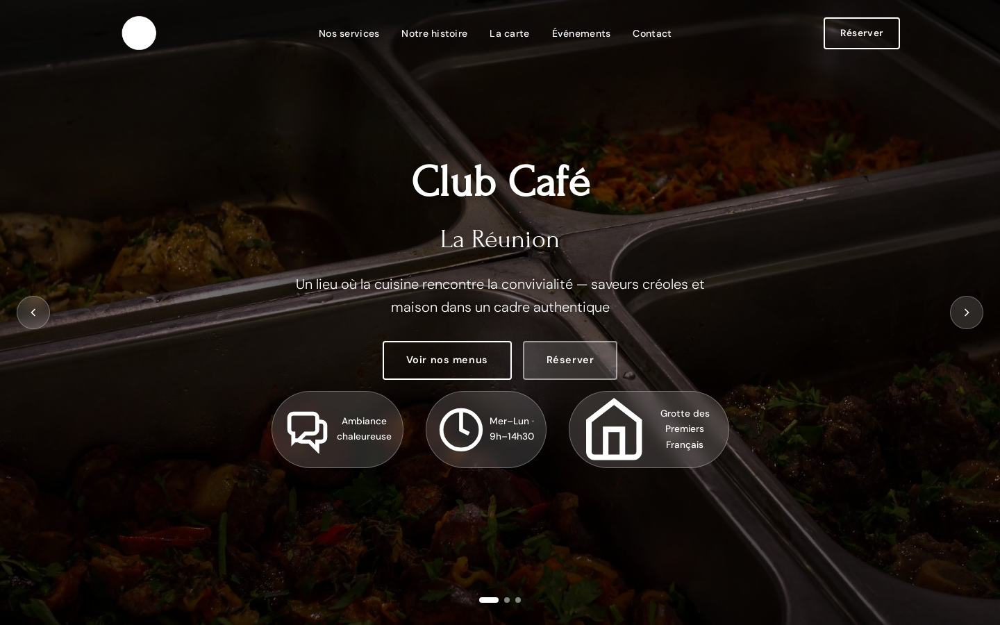
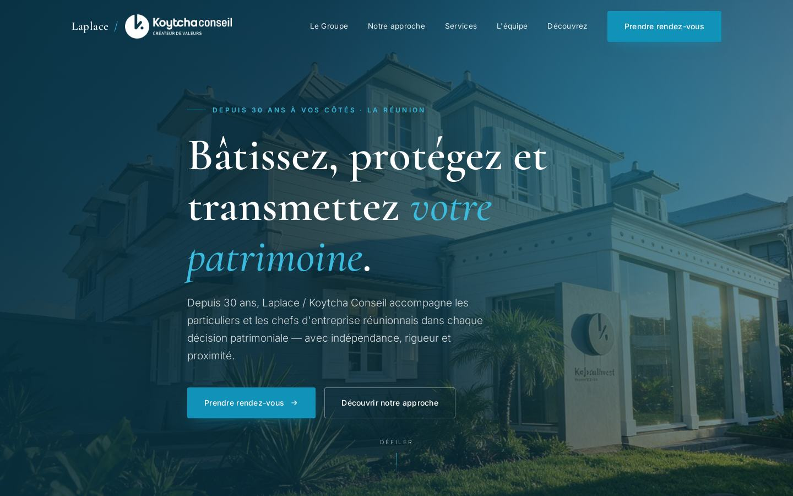

Six sites livrés et deux exemples de vidéo. Tout est en ligne : les liens ouvrent les vrais sites, pas des maquettes.
Restaurants, commerces et services, à La Réunion. Chacun avec sa propre identité — je ne repose pas le même gabarit sur tout le monde.

Boulangerie · Saint-Denis
boulangerie-le-mamita.automatisationboost.com
Restaurant · séminaires et réceptions
villa-fleurie-restaurant-seminaires.automatisationboost.com
Restaurant · viandes fumées
smokehouse-reunion.automatisationboost.com
Restaurant · Hell-Bourg
relais-des-cimes.automatisationboost.com
Café · restaurant
club-cafe-la-reunion.automatisationboost.com
Conseil · immobilier
koytcha.automatisationboost.comDeux usages différents, faits à partir des photos du client — sans tournage, sans photographe.